Neural Transfer Learning for Repairing Security Vulnerabilities in C Code
下面分享一篇我发表在安全学术圈上的论文笔记。原文
原文标题：Neural Transfer Learning for Repairing Security Vulnerabilities in C Code
原文作者：Zimin Chen , Steve Kommrusch , Martin Monperrus
原文链接：https://ieeexplore.ieee.org/abstract/document/9699412
发表期刊：IEEE Transactions on Software Engineering
笔记作者：senu11@SecQuan
笔记小编：黄诚@SecQuan
1.简介
这篇文章与SeqTrans的区别是这篇文章使用迁移学习训练修复c语言的安全漏洞，SeqTrans 在 NMT 上预训练再微调修复Java的安全漏洞
在收集的bug修复语料上训练的模型在 Big-Vul 漏洞修复数据集上达到 21.86 % 的准确率，在 CVEfixes 漏洞修复数据集上达到 22.73% 的准确率
2.数据集
项目：https://github.com/SteveKommrusch/VRepair，其中介绍了漏洞修复数据集的规模
详细介绍如下：
bug修复数据集：作者收集了GitHub上2017-01-01至2018-12-31关于C语言的bug修复commit,从GH Archive下载。
使用关键字 fix 、 solve 、 repair 、 bug 、 issue 、 problem 、 error 、 fault 、 vulnerability作为bug修复判断依据进行提取，总共分析了 7.29 亿 (728916054) 个commit，并选择了 2100 万 (20568128) 个确定为bug修复commit，超过了Tufano 数据集的大小（10056052）；据文件扩展名进一步过滤bug修复commit，并删除未修复任何以“.c”结尾的文件的提交，最终 910000 个bug修复的 C commit。
为了识别修改前后的文件，使用 GNU 编译预处理删除所有注释，并提取具有相同函数签名的函数以便进行比较；然后使用 Clang 来解析并tokenize函数的源代码；在“.c”文件中，只考虑完整函数（而非prototypes）；最终获得了 1838740 个函数级的更改，删除重复函数后减少到 655741；使用下文的 content size =3 ，最终得到650499 个。
将此数据集划分为 Btrain（用于模型训练，534858 个样本）和 Bval（用于模型验证，10000 个样本）
Big-Vul 数据集是通过爬取 CVE 数据库并提取漏洞相关信息（例如 CWE ID 和 CVE ID）创建的。然后，根据项目的不同，作者为每个项目的页面开发了不同的爬虫，以获取修复漏洞的 git 提交链接。 Big-Vul 总共包含 348 个项目的 3754 个不同漏洞，这些漏洞被归类为 91 个不同的 CWE ，时间范围从 2002 年到 2019 年。CVEfixes 数据集的收集方式类似于 Big-Vul 数据集。该数据集包含 1754 个项目的 5365 个漏洞，分为 180 个不同的 CWE ，时间范围从 1999 年到 2021 年。
3.框架
该框架由三个部分组成，分别对应bug修复数据集训练阶段、漏洞修复数据集训练阶段、补丁生成阶段
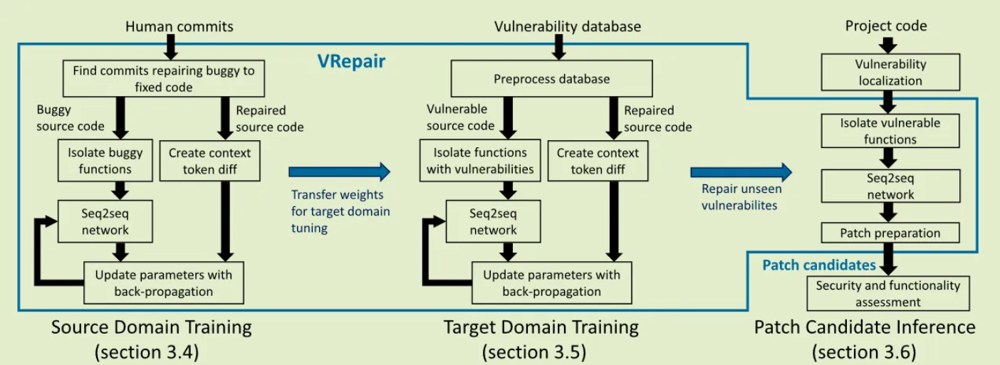
3.1.前期准备
3.1.1.文本表示
在了解Vrepair之前，需要先看看其将代码怎样表示以输入到网络中，又是以怎样的方式输出的。输入输出网络的格式如下所示。
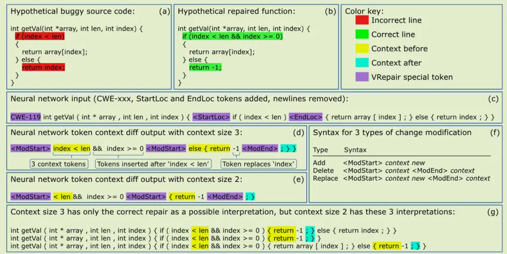
box(a)中的红色代码是含有漏洞的，box(b)对应位置的绿色代码是修复后的；
box(c)，这是网络的输入格式，在输入网络之前会删除函数的换行符，在有漏洞的语句前后添加
box(d)和box(e)，这是网络的输出格式，使用两个特殊token <ModStart> 和 <ModEnd>，它们后面跟着一串token序列，记为 $n_{token}$，后面的$n_{token}$是用来标识更改代码的开始和结束代码，应当具有唯一性。
box(d)和box(e)均有一个特殊标记 content size 3、ontent size 2，这是token <ModStart> 和 <ModEnd>后$n_{token}$的数量；当为3时，box(d)中有17个token序列，为2时，box(e)有14个token序列。但是当content size = 2 时，会发现 <ModEnd>后面的$n_{token}$ 也即“;}”在原函数中不是唯一的，分别在第4、6行出现了共两次，不具备唯一性，这也是导致box(g)中为什么会出现3种补丁的原因，故作者将content size 设置为3，并将其应用于数据集上的所有函数。
3.1.2.分词(Tokenization)
作者使用 Clang 作为分词器处理c源代码，处理后的token没有subtoken(作者通过实验确定subtoken会增加输入和输出长度)；根据，作者使用复制机制（直接将稀有token从输入序列复制/重用到输出序列）来处理 OOV (Out-Of-Vocabulary,训练时未出现，测试时出现了的单词)；另外不将变量重命名，因为它隐藏了有关可以通过词嵌入学习的变量的有价值信息，如GetResult 应该是一个返回结果的函数。
3.2.bug修复数据集训练阶段
按照第 3.1 和 3.2 节中描述的过程来处理 buggy 和 fixed 函数，并提取要提供给网络的 VRepair 表示。所有token序列前面都有一个特殊token “CWE-xxx”，指示此漏洞属于哪种类型的 CWE 类别。添加这个特殊标记是因为作者认为具有相同 CWE 类别的漏洞以类似的方式修复。对于没有此信息的bug修复语料库，使用“CWE-000”标记表示“通用修复”。这个特殊标记对于漏洞修复训练和补丁生成阶段也是强制性的。
为了解决过拟合，在bug修复数据集训练期间使用early stopping 。为了提前停止，bug修复数据集的一个子集被保留用于训练期间的模型验证。如果两次评估后验证精度没有提高，就停止训练阶段，并使用验证精度最高的模型进行漏洞修复数据集训练。
3.3.漏洞修复数据集训练阶段
接下来，使用bug修复验证数据集来选择bug修复数据集训练产生的最佳模型，并在漏洞修复数据集上对其进行调整。所有的处理和bug修复数据集训练阶段处理一致。为了确保每个 “CWE-xxx “ 特殊token有足够的训练数据，统计出最常见的CWE ID，并且只保留词汇表中具有足够例子的CWE ID。作者保留的CWE ID涵盖了所有漏洞的80%，而没有保留在词汇表中的CWE ID则被替换为’CWE-000’。这里还使用了早期停止，具有最高验证精度的模型被用于补丁生成。
3.4.补丁生成阶段
经过bug修复数据集和漏洞修复数据集训练阶段后，就可以用于生成补丁了。将可疑函数经过3.1.节处理后输入给VRepair，VRepair 使用 Transformer 模型为给定输入创建多个token context diff提议，对于神经网络的每个预测，VRepair 找到应用补丁的上下文，并应用预测的补丁来创建补丁函数（这句话意思就是VRepair只输出更改后的token，并不是将整个函数的token序列输出，所以需要重新找到上下文填充进去才能形成整个函数，并且VRepair可以修改多行代码）。 Beam search对模型的输出进行排序，并且系统可以考虑 n 个最可能的输出。
VRepair 生成补丁后，由人类、测试组或静态分析器进行验证。例如，如果漏洞是由静态分析器发现的，则可以通过同一个静态分析器再次验证已打补丁的程序，以确认该漏洞已被 VRepair 修复。由于此评估可能会消耗时间和资源，因此提出了一种新的 Beam 称为 VRepair beam 改进 Beam Search，通过限制 VRepair beam 来评估 VRepair 系统的输出，该限制代表 VRepair 提出的用于再次验证的程序数量。
VRepair beam = combination(Neural beam，Interpretation beam)
Neural beam 是由神经网络创建的一组预测，从最有可能的开始，一直持续到输出了配置的最大数量；Interpretation beam 就是在给定content size值下，可能产生的预测数，如图2，当 content size = 3 时，Interpretation beam = 1，当 content size =2 ，Interpretation beam =3 ；VRepair beam 是从 Neural beam 和 Interpretation beam 创建的所有程序的笛卡尔积。
3.5.VRepair基于Transformer的神经网络结构
VRepair 使用如图 3 所示的 Transformer 架构。
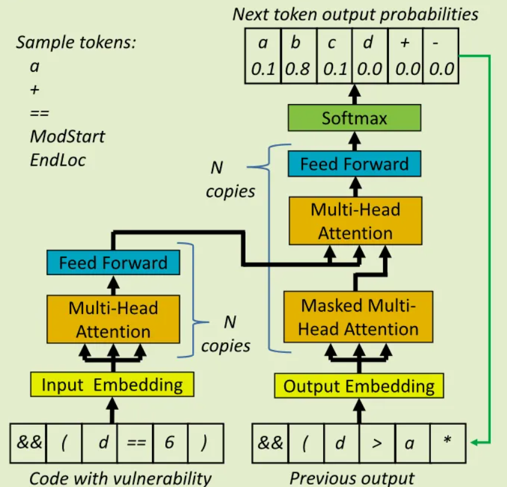
首先，模型接收经3.1.1.节处理过的漏洞代码；多头注意力层的多个副本学习输入数据的隐藏表示；然后第二组多头注意力层使用这些表示来生成最有可能输出的标记的概率表；此外，作者使用了一种复制机制Incorporating copying mechanism in sequence-to-sequence learning、SequenceR: Sequence-to-Sequence Learning for End-to-End Program Repair，训练一个替代神经网络学习将输入token复制到输出，以减少所需的词汇量。
输出的第一个token完全基于模型已经从输入代码学习的隐藏表示所产生的。当token输出时，它们可以作为模型的输入，因此它可以正确地调整下一个令牌的概率。例如，在图3中，令牌’ && (d > a* ‘序列输出后，模型预测下一个令牌应该是’ b ‘，概率为0.8
VRepair 的 Hyperparameters 如表1所示，
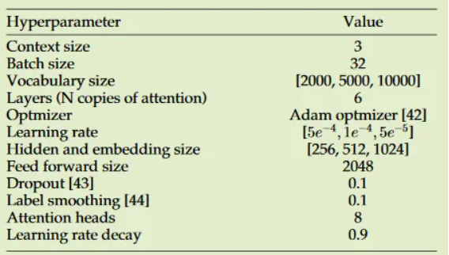
4.实验
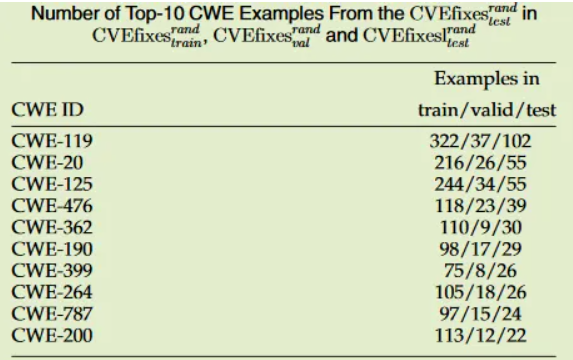
RQ1:仅使用bug修复数据集或者漏洞修复数据集训练的准确性是多少？
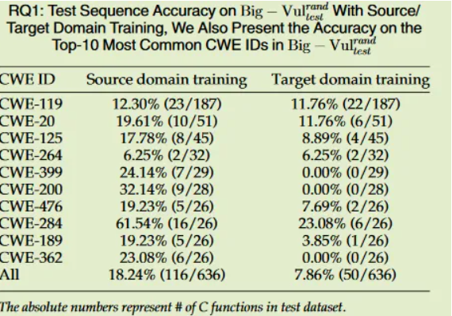
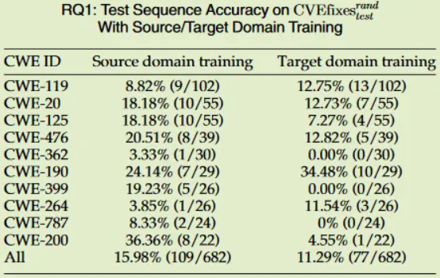
RQ2:在bug修复数据集上训练然后使用漏洞修复数据集训练（调整）的模型是否比R1更好？
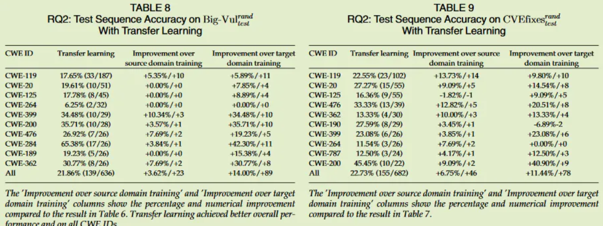
RQ3:与去噪预训练相比，迁移学习的准确性如何？
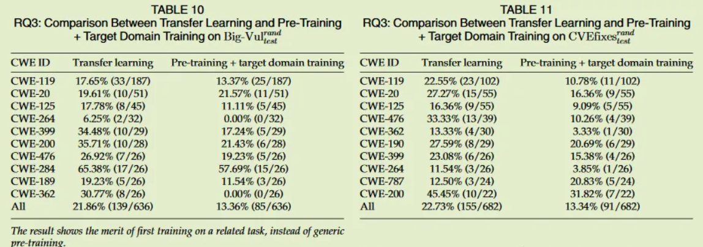
RQ4:不同的数据拆分策略如何影响本文所提模型的准确性？
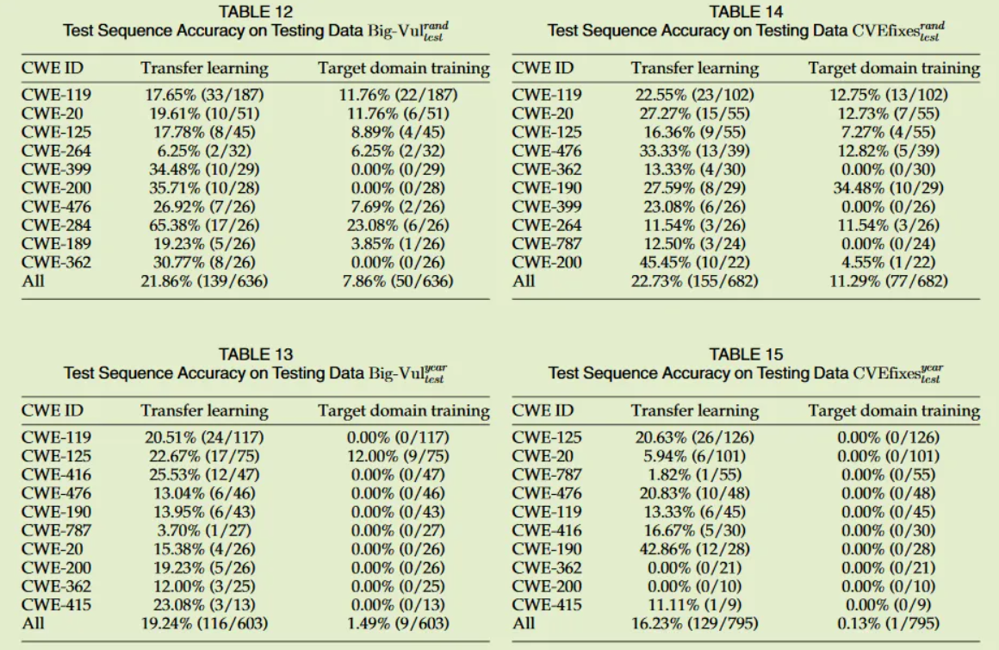
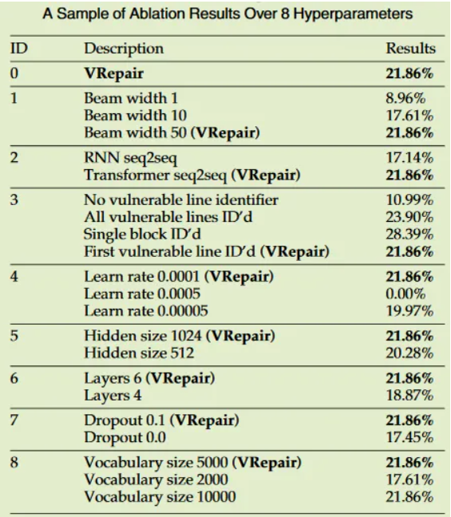